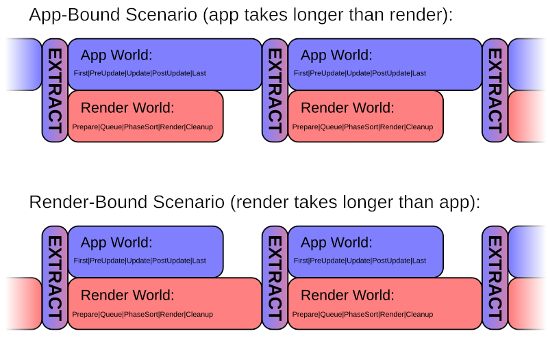

| Bevy Version: | 0.9 | (outdated!) |
|---|
As this page is outdated, please refer to Bevy's official migration guides while reading, to cover the differences: 0.9 to 0.10, 0.10 to 0.11, 0.11 to 0.12, 0.12 to 0.13.
I apologize for the inconvenience. I will update the page as soon as I find the time.
当前双语版本对应的是: 3d540e7, 日期: 2024/06/13, 等双语版本整个翻译完之后,再处理原始仓库的更新
Render Stages
Everything on the CPU side (the whole process of driving the GPU workloads) is structured in a sequence of "render stages":
这里的渲染阶段都是指在CPU端发生的,用于驱动GPU工作任务.
Timings
Note: Pipelined rendering is not yet actually enabled in Bevy 0.9. This section explains the intended behavior, which will land in a future Bevy version. You have to understand it, because any custom rendering code you write will have to work with it in mind.

Every frame, Extract serves as the synchronization point.
When the Render Schedule completes, it will start again, but Extract will wait for the App Schedule, if it has not completed yet. The App Schedule will start again as soon as Extract has completed.
Therefore:
- in an App-bound scenario (if app takes longer than render):
- The start of Extract is waiting for App to finish
- in a Render-bound scenario (if render takes longer than app):
- The start of App is waiting for Extract to finish
If vsync is enabled, the wait for the next refresh of the screen will happen in the Prepare stage. This has the effect of prolonging the Prepare stage in the Render schedule. Therefore, in practice, your game will behave like the "Render-bound" scenario shown above.
The final render (the framebuffer with the pixels to show in the window) is presented to the OS/driver at the end of the Render stage.
Bevy updates its timing information (in Res<Time>)
at the start of the First stage in the main App schedule. The value to
use is measured at "presentation time", in the render world, and the
Instant is sent over a channel, to be applied on the
next frame.
本篇写的是bevy v0.9时代,那时管道渲染还没有enable,后续版本会启用. 只要是写自定义渲染的,需要明白本文的全部.
同步点:在每帧中,不管是app world和render world哪个运行时间长,以长的为单位,
结束后都会执行外部调度,在外部调度阶段会将app数据同步到render中,这个点就是同步点.
同步点之前是游戏逻辑执行;之后是渲染.两个同步点间是app逻辑和上帧的渲染逻辑并行执行.
如果启用了垂直同步,则等待屏幕的下一次刷新将发生在准备阶段. 这会延长渲染计划中的准备阶段.实际看起来render时长(每帧运行花费时间)会被app时长要长.
最终的渲染是让OS/显卡驱动来呈现的.
参与到渲染的阶段很多,第一步就是计算render时长和app时长,
bevy会将每帧的时间信息放到Time资源中,这个动作是在app的Main调度中完成的.
在render world中,这个值用于计算每帧渲染时长,
这个信息放在Instant(对单调非递减时钟的测量)中, 通过通道发给bevy,应用在下一帧.
Adding Systems to Render Stages
If you are implementing custom rendering functionality in Bevy, you will likely need to add some of your own systems to at least some of the render stages:
-
Anything that needs data from your main App World will need a system in Extract to copy that data. In practice, this is almost everything, unless it is fully contained on the GPU, or only uses renderer-internal generated data.
-
Most use cases will need to do some setup of GPU resources in Prepare and/or Queue.
-
In Cleanup, all entities are cleared automatically. If you have some custom data stored in resources, you can let it stay for the next frame, or add a system to clear it, if you want.
The way Bevy is set up, you shouldn't need to do anything in Render or PhaseSort. If your custom rendering is part of the Bevy render graph, it will just be handled automatically when Bevy executes the render graph in the Render stage. If you are implementing custom phase items, the Main Pass render graph node will render them together with everything else.
You can add your rendering systems to the respective stages, using the render sub-app:
// TODO: code example
bevy默认的渲染已经将该有的system添加到了对应的调度中, 如果有自定义渲染的功能,需要将这些system添加到如下调度中:
- 要从app传数据到render的,需要在外部调度中添加拷贝数据的system
- 部分场景还需要在渲染的Prepare准备阶段或渲染任务队列阶段构造GPU资源
- 在渲染清理阶段,所有实体会自动清理掉.如果有自定义数据存储在资源中,按需清除
在实际的渲染Render阶段和排序PhaseSort阶段,不需要我们介入.
Extract
Extract is a very important and special stage. It is the synchronization point that links the two ECS Worlds. This is where the data required for rendering is copied ("extracted") from the main App World into the Render World, allowing for pipelined rendering.
During the Extract stage, nothing else can run in parallel, on either the main App World or the Render World. Hence, Extract should be kept minimal and complete its work as quickly as possible.
It is recommended that you avoid doing any computations in Extract, if possible. Just copy data.
It is recommended that you only copy the data you actually need for rendering. Create new component types and resources just for use within the render World, with only the data you need.
For example, Bevy's 2D sprites uses a struct ExtractedSprite, where it copies the relevant data
from the "user-facing" components of sprite and spritesheet entities in the
main World.
Bevy reserves Entity IDs in the render World, matching all the Entities existing in the main World. In most cases, you do not need to spawn new entities in the render World. You can just insert components with Commands on the same Entity IDs as from the main World.
// TODO: code example
外部调度负责同步数据到render world.
Prepare
Prepare is the stage to use if you need to set up any data on the GPU. This is where you can create GPU buffers, textures, and bind groups.
// TODO: elaborate on different ways Bevy is using it internally
// TODO: code example
准备阶段,可以构造GPU要使用的数据.
Queue
Queue is the stage where you can set up the "rendering jobs" you will need to execute.
Typically, this means creating phase items with the correct render pipeline and draw function, for everything that you need to draw.
For other things, analogously, Queue is where you would set up the workloads (like compute or draw calls) that the GPU would need to perform.
// TODO: elaborate on different ways Bevy is using it internally
// TODO: code example
入队阶段,可以构造要执行的渲染任务.
PhaseSort
This stage exists for Bevy to sort all of the phase items that were set up during the Queue stage, before rendering in the Render stage.
It is unlikely that you will need to add anything custom here. I'm not aware of use cases. Let me know if you know of any.
排序阶段:对所有已解析的渲染任务(入队阶段添加的渲染任务)进行排序.
Render
Render is the stage where Bevy executes the Render Graph.
The built-in behavior is configured using Cameras. For each active Camera, Bevy will execute its associated render graph, configured to output to its associated render target.
If you are using any of the standard render phases, you don't need to do anything. Your custom phase items will be rendered automatically as part of the Main Pass built-in render graph nodes, alongside everything else.
If you are implementing a rendering feature that needs a separate step, you can add it as a render graph node, and it will be rendered automatically.
The only time you might need to do something custom here is if you really
want to sidestep Bevy's frameworks and reach for low-level wgpu access.
You could place it in the Render stage.
实际渲染阶段,由bevy按渲染图执行.
这里会根据相机配置来进行渲染,每个相机都有自己的渲染图, bevy会对每个渲染图进行操作,之后将结果输出到相机配置的渲染目标上.
Cleanup
Bevy has a built-in system in Cleanup that clears all entities in the render World. Therefore, all data stored in components will be lost. It is expected that fresh data will be obtained in the next frame's Extract stage.
To persist rendering data over multiple frames, you should store it in resources. That way you have control over it.
If you need to clear some data from your resources sometimes, you could add a custom system to the Cleanup stage to do it.
// TODO: code example
清理阶段. 有自定数据存在资源中要清理的,在这个阶段清理.